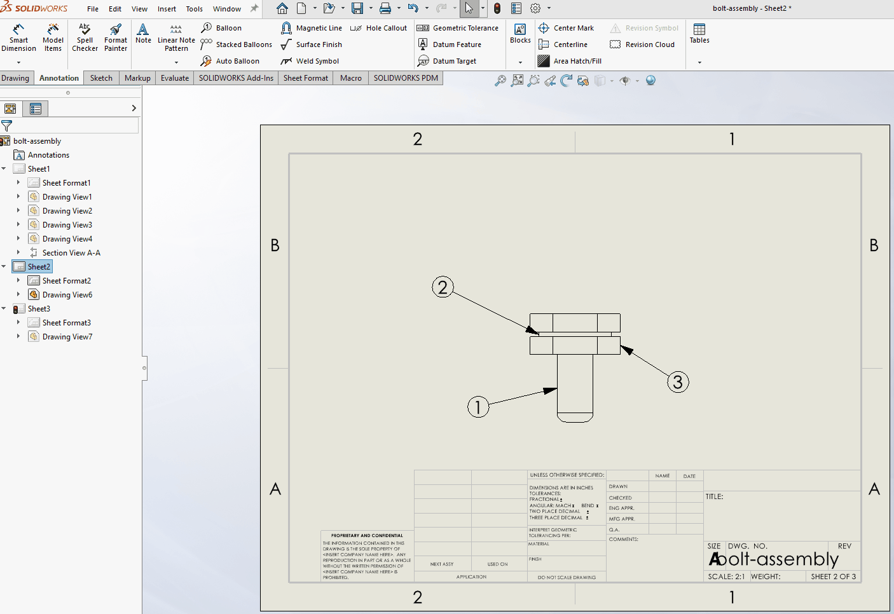
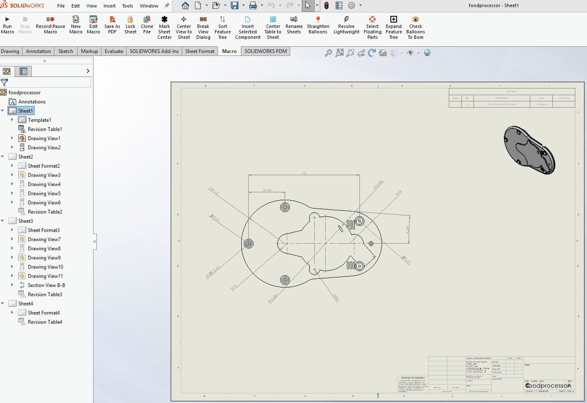

SolidWorks Macros — Case Study
Custom SolidWorks automation tools built to reduce repetitive drafting work, improve consistency, and accelerate drawing workflows.
Goals
- Reduce time spent on repetitive drawing tasks
- Improve drawing consistency and readability
- Leverage the SolidWorks API to automate common workflows
- Create reusable tools that support multi-selection and real-world drafting habits
Tools & Technologies
- SolidWorks API
- VB / VBA macros (.swp)
- SolidWorks Drawings & Annotations
- Geometry‑based logic (leader X/Y evaluation)
- User interaction via prompts
Macro 1 — Balloon Orientation
Filename: BalloonOrientation.swp
Problem
In large or frequently edited drawings, balloons often become misaligned. Manually rotating multiple balloon notes to match the drawing layout is repetitive and time‑consuming—especially when many callouts are involved.
Solution
This macro automatically orients drawing balloons vertically or horizontally based on the leader’s X/Y direction and a user‑selected orientation.
- Uses the balloon leader’s X/Y location
- Applies consistent orientation logic
- Supports single or multiple balloon selections
- Executes instantly within SolidWorks drawings
How It Works (High‑Level)
- User selects one or more drawing balloons
- Macro prompts for desired orientation (vertical or horizontal)
-
For each balloon:
- Evaluates leader endpoint X/Y direction
- Determines optimal text rotation
- Applies orientation while preserving leader attachment
Demo

Why This Matters
- Saves several minutes per drawing
- Ensures drafting consistency across sheets
- Scales efficiently for drawings with many callouts
- Demonstrates SolidWorks API + geometry reasoning
Code
*Demonstration uses non‑proprietary sample drawings.*
Macro 2 — Center Drawing View
Filename: CenterDrawingView.swp
Problem
When working with long or narrow components—such as ball screws or shafts— drawing views often require repeated manual repositioning to achieve a visually balanced layout. This interrupts the dimensioning workflow and can make it difficult to maintain consistency across drawings.
Solution
This macro automatically centers a selected drawing view on the active drawing sheet by aligning it in both the X and Y directions. It is intended to improve visual clarity and create a clean, well‑balanced starting point for dimensioning.
- Centers the selected drawing view in X and Y
- Operates on the active drawing sheet
- Requires only a single view selection
- Executes instantly within SolidWorks
How It Works (High‑Level)
- User selects a drawing view
- Macro calculates the center of the active sheet
- View position is updated to match the sheet center
- Dimensions can then be placed neatly and consistently
Demo

Why This Matters
- Improves drawing readability and visual balance
- Reduces repetitive view repositioning
- Helps ensure clean, symmetric dimension placement
- Especially useful for long parts such as ball screws
Code
*Demonstration uses non‑proprietary sample drawings.*